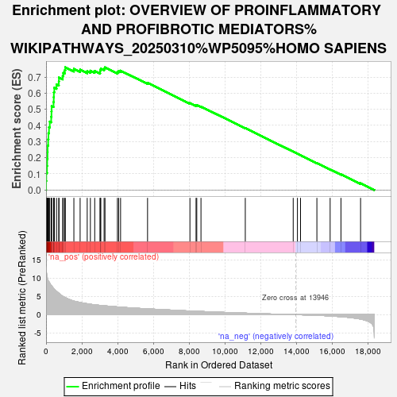
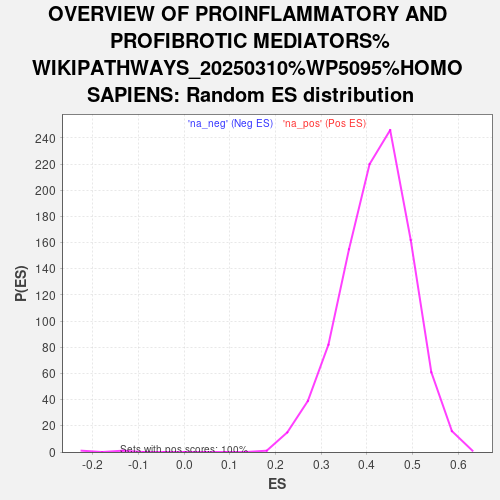

| | | Dataset | ranked_genes |
| Phenotype | NoPhenotypeAvailable |
| Upregulated in class | na_pos |
| GeneSet | OVERVIEW OF PROINFLAMMATORY AND PROFIBROTIC MEDIATORS%WIKIPATHWAYS_20250310%WP5095%HOMO SAPIENS |
| Enrichment Score (ES) | 0.76075935 |
| Normalized Enrichment Score (NES) | 1.808886 |
| Nominal p-value | 0.0 |
| FDR q-value | 4.7734102E-5 |
| FWER p-Value | 0.001 |
Table: GSEA Results Summary

Fig 1: Enrichment plot: OVERVIEW OF PROINFLAMMATORY AND PROFIBROTIC MEDIATORS%WIKIPATHWAYS_20250310%WP5095%HOMO SAPIENS
Profile of the Running ES Score & Positions of GeneSet Members on the Rank Ordered List
| SYMBOL | RANK IN GENE LIST | RANK METRIC SCORE | RUNNING ES | CORE ENRICHMENT | | 1 | CCL3 | 3 | 12.862 | 0.0549 | Yes |
| 2 | CCL4 | 13 | 12.046 | 0.1060 | Yes |
| 3 | TNF | 54 | 10.450 | 0.1486 | Yes |
| 4 | CXCL11 | 62 | 10.415 | 0.1928 | Yes |
| 5 | CCL4L2 | 83 | 9.885 | 0.2341 | Yes |
| 6 | IL1B | 89 | 9.802 | 0.2758 | Yes |
| 7 | CCL13 | 117 | 9.304 | 0.3142 | Yes |
| 8 | TNFSF13B | 134 | 9.166 | 0.3526 | Yes |
| 9 | IL7 | 165 | 8.953 | 0.3893 | Yes |
| 10 | CXCL10 | 207 | 8.611 | 0.4239 | Yes |
| 11 | XCL2 | 288 | 7.989 | 0.4538 | Yes |
| 12 | XCL1 | 303 | 7.926 | 0.4870 | Yes |
| 13 | EBI3 | 312 | 7.868 | 0.5202 | Yes |
| 14 | CXCL9 | 419 | 7.183 | 0.5452 | Yes |
| 15 | CXCL6 | 430 | 7.157 | 0.5753 | Yes |
| 16 | CXCL1 | 436 | 7.077 | 0.6054 | Yes |
| 17 | CCL5 | 461 | 6.898 | 0.6336 | Yes |
| 18 | CXCL2 | 585 | 6.401 | 0.6543 | Yes |
| 19 | CSF1 | 712 | 5.869 | 0.6725 | Yes |
| 20 | CXCL16 | 721 | 5.829 | 0.6971 | Yes |
| 21 | LIF | 929 | 5.007 | 0.7072 | Yes |
| 22 | IL15 | 965 | 4.933 | 0.7264 | Yes |
| 23 | TGFB1 | 1044 | 4.728 | 0.7424 | Yes |
| 24 | IL1RN | 1075 | 4.668 | 0.7608 | Yes |
| 25 | CCL21 | 1554 | 3.719 | 0.7505 | No |
| 26 | CCL11 | 1903 | 3.325 | 0.7457 | No |
| 27 | NFKB1 | 2299 | 2.986 | 0.7369 | No |
| 28 | CCL2 | 2476 | 2.855 | 0.7395 | No |
| 29 | MMP9 | 2718 | 2.701 | 0.7379 | No |
| 30 | CX3CL1 | 3020 | 2.541 | 0.7323 | No |
| 31 | CXCL8 | 3022 | 2.540 | 0.7432 | No |
| 32 | CCL19 | 3059 | 2.524 | 0.7520 | No |
| 33 | IL33 | 3242 | 2.435 | 0.7525 | No |
| 34 | CCL8 | 3292 | 2.413 | 0.7601 | No |
| 35 | IL23A | 3986 | 2.125 | 0.7313 | No |
| 36 | CCL22 | 4054 | 2.098 | 0.7367 | No |
| 37 | IL17D | 4162 | 2.059 | 0.7396 | No |
| 38 | SPP1 | 5669 | 1.596 | 0.6641 | No |
| 39 | CXCL12 | 8036 | 1.006 | 0.5390 | No |
| 40 | CCL28 | 8378 | 0.936 | 0.5243 | No |
| 41 | TSLP | 8418 | 0.930 | 0.5262 | No |
| 42 | IL11 | 8653 | 0.883 | 0.5172 | No |
| 43 | IL18 | 11128 | 0.419 | 0.3836 | No |
| 44 | TNFSF13 | 13804 | 0.015 | 0.2374 | No |
| 45 | CXCL14 | 14040 | -0.011 | 0.2245 | No |
| 46 | CTF1 | 14213 | -0.028 | 0.2153 | No |
| 47 | CCL14 | 15127 | -0.173 | 0.1661 | No |
| 48 | CCL15 | 15867 | -0.350 | 0.1271 | No |
| 49 | VEGFA | 16471 | -0.546 | 0.0965 | No |
| 50 | EPO | 17567 | -1.202 | 0.0417 | No |
Table: GSEA details [plain text format]

Fig 2: OVERVIEW OF PROINFLAMMATORY AND PROFIBROTIC MEDIATORS%WIKIPATHWAYS_20250310%WP5095%HOMO SAPIENS: Random ES distribution
Gene set null distribution of ES for OVERVIEW OF PROINFLAMMATORY AND PROFIBROTIC MEDIATORS%WIKIPATHWAYS_20250310%WP5095%HOMO SAPIENS